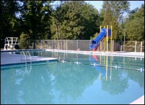

JLSC POOL, GROUNDS & PAVILION RENTAL INFORMATION
Nothing is cooler for kids than a swim party. During the season, we make the pool, pavilion & activity areas available in 2 hour blocks for up to 25 people for a very reasonable rate (larger parties available, please request information).
Our pools and the property is perfect for birthday parties, family reunions, club meetings and more. We hope you and your guests can enjoy themselves in a fun, safe and friendly environment.
If you are interested in having a party hosted at Juniper Lane Swim Club, please review our details, guidelines, and the party reservation request form.
Interested in throwing a party at Juniper Lane Swim Club?
PARTY RESERVATIONS & GUIDELINES
Party Reservations Details (pdf) or You can email our Social Director at partyreservations@jlsc.org or call/text to (848)-468-JLSC (5572) for detailed information.
